战斗在乌克兰顿涅茨克和卢甘斯克一线的乌克兰女战士当中，有些只有22岁，很多人从18岁开始就加入了反抗俄罗斯的战斗中。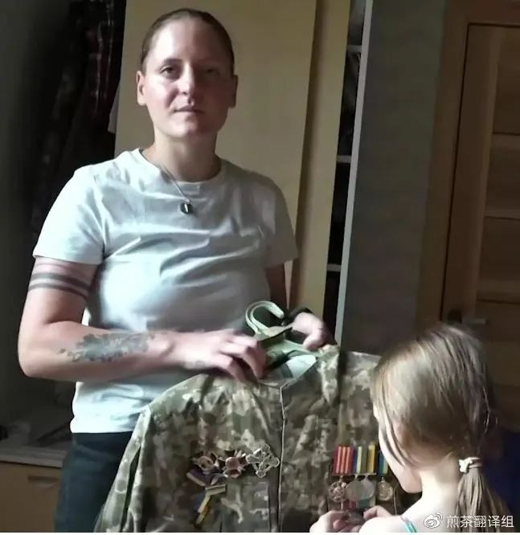Tolopa，22岁，俄罗斯籍，志愿加入了乌克兰陆军，有一个女儿。（图片来源：维基百科，记者：Оксана Лігостова）Tolopa出生和成长于俄罗斯。她热爱体育，曾是俄罗斯徒手格斗的全国冠军。她于2014年来到了乌克兰，因为她拒绝相信俄罗斯的宣传，她希望能够用自己的双眼看到事件的真相。当这次战争打响时，她自愿加入了乌克兰陆军Aydar营，为了能够帮助她的乌克兰朋友保卫自己的家园。她希望通过自己的行动表达对俄罗斯政府政策的反对。Tolopa目前参与了多个热点地区的战斗，起初作为先锋，之后作为侦察军官。她曾两次受伤。Tolopa被俄罗斯安全部门通缉，受到三项指控。自她加入乌克兰军队以来，她失去了家人的支持，Tolopa在俄罗斯的家人向政府承诺，如果她返回俄罗斯，将协助软禁Tolopa。她已经决定和自己的小女儿永久留在基辅生活。
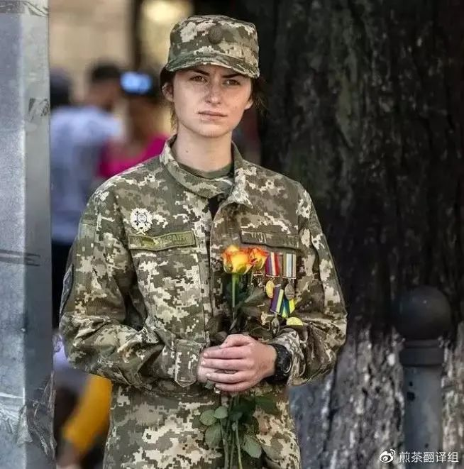Mykytenko，22岁，乌克兰籍，侦察排长。（照片来源：euromaidanpress）Mykytenko在战争打响时，觉得自己必须为保卫家园尽一份力。虽然她受到的教育是作为一名语言学家，她仍然报名参加了乌克兰陆军。由于她的优秀个人能力，勇气和专业性，她在21岁时就升任排长。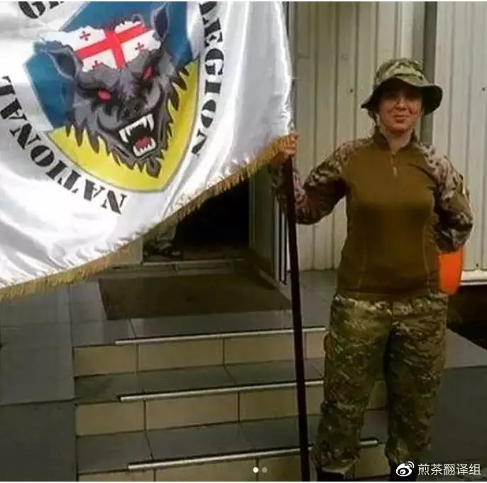Nana，30岁，格鲁吉亚人，格鲁吉亚国家军团士兵，有三个孩子。（图片来源：格鲁吉亚国家军团Ins）Nana是一名职业军人。从2008年起，她就隶属有名的格鲁吉亚国家军团，这是一个支持格鲁吉亚和乌克兰自由和独立的军团。自东乌克兰战争打响，格鲁吉亚国家军团就协助乌克兰对抗俄军。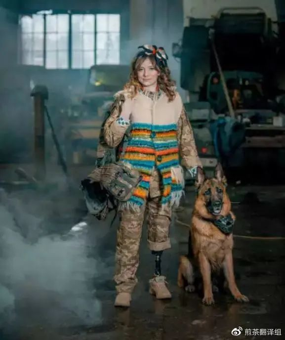
（图片来源：乌克兰国家纪念学院）
Benda，曾为一个旅的随军厨师，在几年前顿巴斯的阿夫杰夫卡市被轰炸时由于受伤被截掉左脚。她现在已经回归平民生活，和自己的家人住在一起。在俄罗斯入侵引发的战争期间，成千上万的乌克兰妇女拿起了武器。据媒体报道，妇女占乌克兰战斗部队人数的15%到17%。在冲突爆发的前两周，社交媒体上满是着乌克兰妇女进行战斗训练的照片。3 月 15 日，美国有线电视新闻网报道称，一些乌克兰妇女在将父母和孩子送到波兰边境城镇普热梅希尔后，转身重返战场。CNN 记者 Ed Lavandera和 Cristiana Moisescu写道：“她们认为重返战区是抵抗俄罗斯侵略者的标志性行为。”作为研究妇女和极端主义的专家（佐治亚大学教授米娅·布鲁姆、索菲亚·莫斯卡连科等），乌克兰为我们提供了一个独特的视角，让我们得以了解妇女在保卫国家和作为自身领袖所能发挥的作用。原因之一是乌克兰的地理位置。温和的气候和肥沃的土地相结合，使勤劳的人们能够自力更生。父亲不需要用女儿换嫁妆来耕种土地，也不需要像农奴一样欠着有钱的地主的债。如果一位寡妇选择通过打理花园和养宠物来充实生活，那她就可以保持未婚状态。在乌克兰民间传说中，单身女性是经常出现的角色，她们通常是寡妇，没有男人也能安稳地生活并充实自我。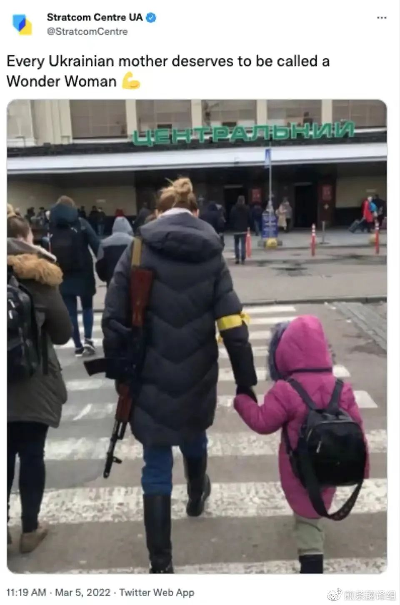一个穿着冬衣的女人左手拿着枪，右手牵着孩子的手。正如乌克兰文化部的这条推文所示，乌克兰政府在战争期间强调了该国赋予妇女权力的传统。Twitter帐户：乌克兰文化和信息政策部战略通信和信息安全中心毫无疑问，乌克兰女性的真实生活绝非童话故事，她们的经历可能并不普遍适用。然而，从人类经历的丰富程度来看，一种文化保留了那些与大多数成员产生共鸣的故事，作为他们能够达成共识的理想。在乌克兰，那些非常独立的女性是包括在这种理想之中的。乌克兰的地理环境也催生了一种女权主义文化，在这种文化中，女性在婚姻中自主拥有发言权，而不是被父亲或男性亲属“赠予”。在秋天，一般是通过“svaty”——一个来自新郎家庭的代表团来求婚，新娘可以给新郎家庭一个南瓜作为安慰奖来拒绝求婚。乌克兰语“抓南瓜”的意思是被女人拒绝。一个乌克兰女孩的美貌有时会被认为有“一柜子的南瓜”，这意味着她可能会有很多追求者。这样的叙述塑造了乌克兰的文化心理，并因此影响了对女性的态度。自2022年俄罗斯开始入侵以来，互联网上放大了几段描述乌克兰妇女抵抗俄罗斯武装士兵的精彩视频。一名妇女向士兵们提供葵花籽，并指示他们“最好把这些种子放在口袋里，这样当你们都死在这里时，向日葵还会生长。”另一段视频显示，一名妇女在 Konotop 的坦克上对一名全副武装的俄罗斯士兵大喊：“你不知道你在哪里吗？你在 Konotop。这里的每个女人都是女巫。从明天开始，你永远都不会勃起了。”有来自被占领的乌克兰各个城镇的视频显示，一位妇女对俄罗斯士兵大喊大叫，羞辱他们，并告诉他们“想想自己的母亲和妻子”。谁又能忘记基辅奥莱娜(Olena)的故事呢?据报道，她用一罐自制的西红柿罐头击落了一架无人机。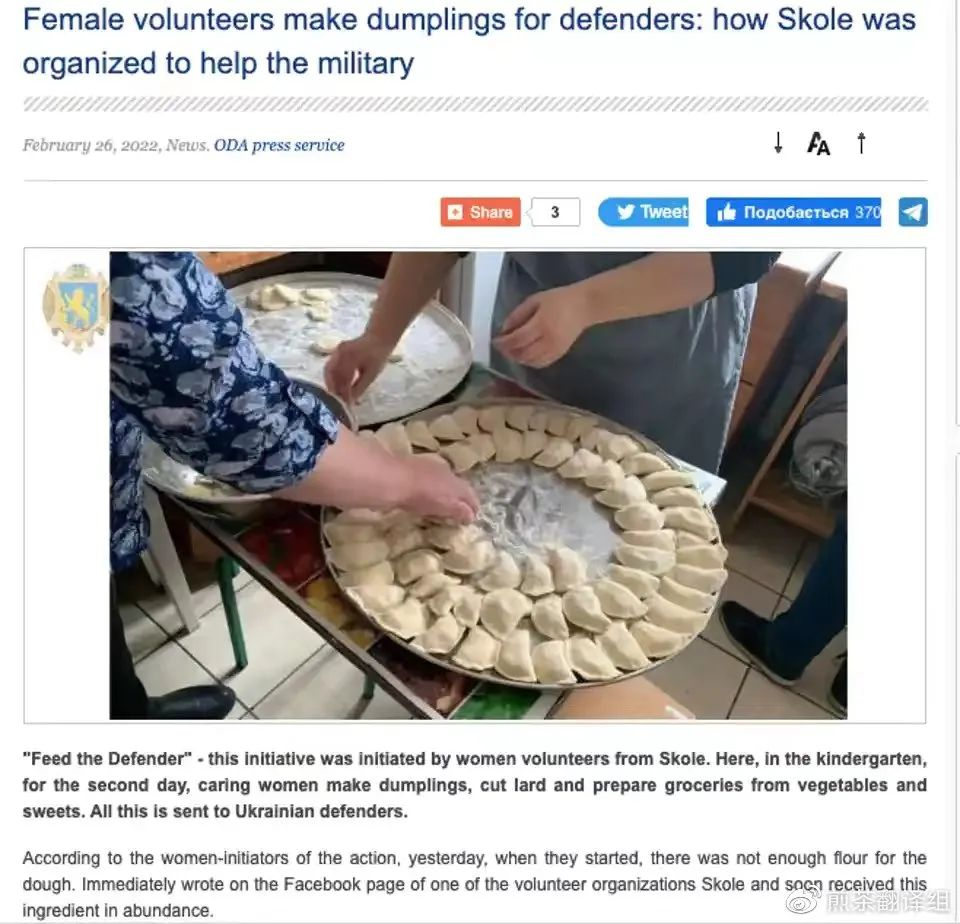
乌克兰当地政府网站的截图，妇女们正制作传统饺子来犒劳那些与俄罗斯人作战的人。乌克兰利沃夫地区管理局政府网站 2022 年 2 月 26 日发布的截图。（利沃夫地区管理局）
不少乌克兰妇女已经在前线志愿服务，她们没有加入军队，不需要面对真枪实弹攻击的俄罗斯士兵。这种志愿服务实践可以追溯到 2014 年的尊严革命，当时志愿者创建了一个事实上的“第二国家”，而这个官方国家却因俄罗斯领导的贪污腐败和裙带关系而瘫痪。2014年，女性志愿者为了保卫基辅独立广场的男人们，为他们送去了食物、衣服和燃油。数月来，基辅独立广场一直是反对防暴警察和亲俄雇佣兵的抗议活动的舞台，这些雇佣兵受雇于时任总统维克多·亚努科维奇(Viktor Yanukovych)的政府。志愿人员向医院和救护车运送药品;他们组建了快速反应防御小组，保护即将发生袭击的地点;妇女们编织迷彩网，把伤员藏起来躲避伤害。2022 年，同样的一批乌克兰妇女担任了这些熟悉的角色，她们日以继夜地工作，以满足军队和志愿领土防御部队、受困平民、残疾人和老人、医生甚至被遗弃的宠物们的需求.老太太们正在用缝纫机制作防弹衣和军装。乌克兰社交媒体上有这样一个笑话:“如果你告诉乌克兰志愿者，需要一枚核弹头，他们将用大约两个小时来组装，并将其送到指定的地点。还会送来茶和饼干。”虽然乌克兰的志愿者并非都是女性，但据报道，在提供食物、衣服、药品、防护装备、识别和帮助弱势个体的任务中，女性成为了志愿者队伍的大多数。更值得注意的是，乌克兰军方国防部长的官方Facebook账户发布了一份感谢志愿者的帖子，其中写道:“谢谢你们，我们的志愿者。是的，今天军队的装备比 2014 年要好得多。但急救箱、防弹背心、头盔、药品和卫生用品需要一直补给。对我们来说最重要的是知道你们的存在。你们24小时昼夜不息。你们打电话，写信，提供帮助，展现创造力，支持我们，和我们谈笑风生。你让我们感受到我们的团结和不可阻挡。感觉到身后是一个国家，你与他们同在，为了他们，你们把国家重任扛在肩上。……一起走向胜利！”就像在叙利亚和伊拉克作战的被称为“科巴尼的女儿们”的库尔德妇女一样，当妇女拿起武器时，会产生强大的心理震慑。觉得自己会输给女性的士兵们可能会认为自己很没用，这是叙利亚民主力量(Syrian Democratic Forces)的女子护卫队(women’s Protection Units)在2014年至2016年对伊斯兰国(Islamic State)武装分子形成的威慑。就像现在的乌克兰妇女一样，这些妇女挺身而出。他们很勇敢，而且行动非常成功。俗话说，每个成功男人的背后都有一个女人。乌克兰战争表明，乌克兰军队成功的背后可能是一支乌克兰妇女军队。“因为这场战争，男女之间的所有差异都被消除了，”31 岁的乌克兰士兵玛丽安娜说。俄罗斯入侵乌克兰的决定激发了女权主义的复兴，许多女性认为这不仅是争取乌克兰独立的斗争，也是对传统保守主义和苏联历史的斗争。“我们男女在训练和战斗方面没有区别，”“前线绝对平等。” 32岁的乌克兰人，保卫首都基辅的志愿者维多利亚告诉媒体热线。维多利亚在战前是一名管家，现在接受了小型武器训练，并被部署到城外众多前线之一执行战斗任务。“我接受过操作和使用机关枪的训练，”她解释说，并补充道，“我被部署在首都以外的前线。虽然我不能说在哪里——这是不允许的——但是在俄罗斯人附近。” 前考古学家、基辅居民 Alles在附近的一个检查站重申了前线绝对平等这一点。“男性和女性之间的训练没有什么区别，”Alles告诉媒体热线。“唯一的区别可能是女性更有可能成为医生。” 已经37岁的她补充说：“战争意味着现在，我们都一起生活、战斗甚至阵亡。”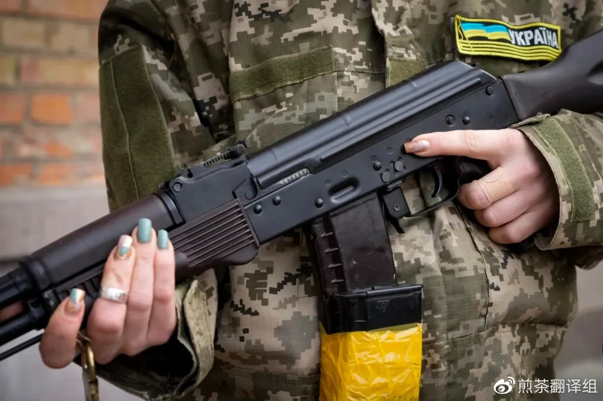
2022 年 2 月 27 日星期日，由于乌克兰基辅的宵禁，一名武装民防妇女手持卡拉什尼科夫突击步枪在一条空荡荡的街道上巡逻。（美联社照片/Efrem Lukatsky）
关于乌克兰军队中女性人数的数据很难有清晰明确的统计，但她们在军队中占很大比例。“我认为30%的军人是女性，但没有官方统计数据，”Alles的前同事Marianna 推测道。这个看起来很高的数字可能代表了这样一个事实，即有许多妇女没有武装，但她们却在从事支持军事行动的工作。“我们有很多人，但有些人没有选择当兵，而是以其他方式支持乌克兰军队，比如志愿服务或成为医务人员，”Alles告诉媒体热线。据当地居民亚历山大（Alexander）的讲述，他是一名当地居民，过去曾被安排采访女兵，当时基辅的女兵数量有限。“我开车绕城转转；检查站的女性并不多，我猜不到5%，也许只有3%，”49 岁的亚历山大告诉媒体热线。“可能还有更多，但在前线战斗的大多数女性都有军事背景，主要集中在城外或东部地区，”他补充道。 在大多数军队中，女性倾向于为处于战斗岗位的人提供支持，并且通常至少在一定程度上与男性同事直接隔离。“也许在这次战争之前，军队里的状况确实是这样的，”维多利亚解释说，“男女之间差别明显，但现在我们一起生活和战斗，甚至休息都在同一个军营里——绝对没有任何区别。”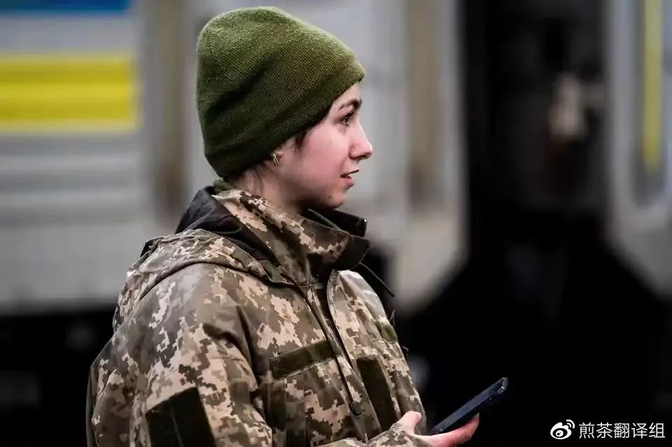
2022 年 3 月 9 日，一名乌克兰士兵在利沃夫等待一列将她带到前线的火车。Vincenzo Circosta / SOPA Images / LightRocket来自Getty Images
乌克兰——特别是在该国东部的保守派，顿巴斯和卢甘斯克周围——对女性角色有着非常传统的看法。然而，随着该国逐渐向西方自由主义态度转变，女性的角色发生了变化。2014年独立广场革命推翻了当时的总统维克托·亚努科维奇的亲俄政府，标志着乌克兰开始转向欧盟和西方。“当时我是一名护理人员，”斯维特兰娜告诉媒体热线，“帮助了2014 年在 Maidan 广场受伤的人，这是乌克兰历史上一个非常重要的时刻。”这位现年 50 岁的老人现在在基辅中央协调医院工作，负责向前线分配和部署医疗队，他现在也认为这两种性别之间几乎没有区别。“我认为我认识的所有决定留下来保护我们家园的女性都这么认为。男人和女人，我们都是平等的，我们都在这里做同样的工作，保护乌克兰免受俄罗斯的侵略。” “我们本可以离开，但我们不想留在乌克兰之外，”Alles 解释说，“所以尽管被允许离开，但我们不想……我们很高兴有机会保卫国家。”女性角色的改变，与男性并肩战斗面对死亡，似乎改变了许多人对乌克兰社会中女性角色的态度。 “在战争之前，有传统的苏联价值观，但在俄罗斯入侵之后，一切都发生了变化，男人和女人，我们都是一样的，我们都是平等的，”她解释道。她的朋友玛丽安娜重申了这一点：“是的，因为这场战争，男女之间的所有差异都被消除了，人人平等。在这场战争中，男人、女人，我们都同样愿意在与侵略者的战斗中牺牲。”乌克兰女性正在告诉全世界，她们在战争中能取得什么成就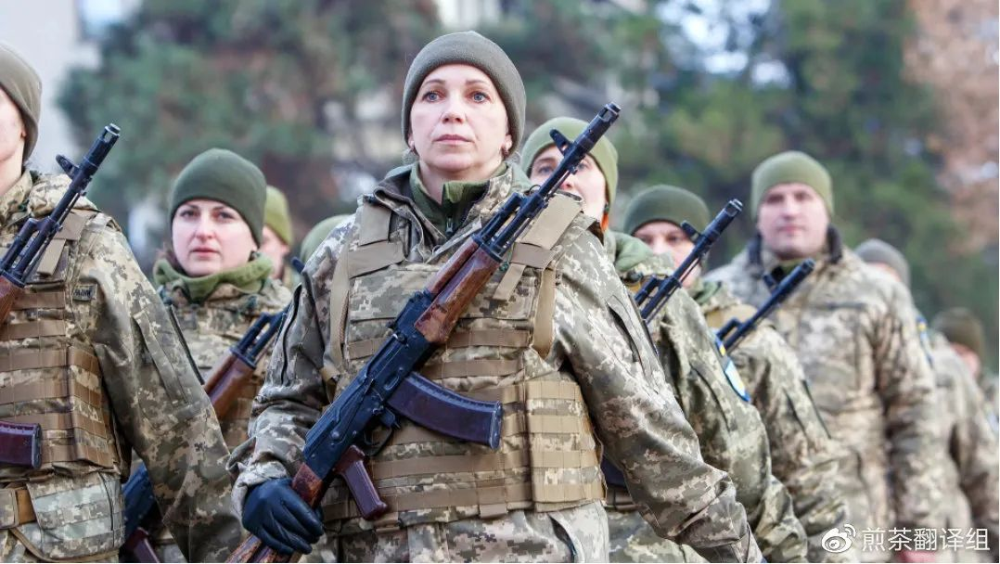
2021 年 12 月 28 日，第 128 山地突击独立旅从乌克兰西部乌日霍罗德联合部队行动 (JFO) 地区返回后，手持步枪的士兵在欢迎仪式上游行。（Serhii Hudak/Ukrinform/Future Publishing via Getty Images）
据美国有线电视新闻网报道，目前与俄罗斯作战的士兵中15%是女性。美国有线电视新闻网的克里斯蒂娜麦克法兰（Christina Macfarlane）说，其中有些人不是正式的军人，但她们接受了诸如如何射击类的“速成课程”培训。决定留在基辅的乌克兰议会议员基拉·鲁迪克 (Kira Rudik) 告诉麦克法兰，现在女性可以选择加入乌克兰军队而不会被劝阻她们应该带着孩子离开，这是一种特权。“我们现在是为自己的选择而战，”她说，并补充说，她认为就为战争服务的女性人数而言，实际的数字应该更高。虽然15%的士兵可能是女性，但在各种抵抗组织中战斗的女性有更多。鲁迪克说：“我认为现在在军队中战斗以及在其他任何地方与俄罗斯人作战的场景中，女性的人数实际上比统计的人数更高。”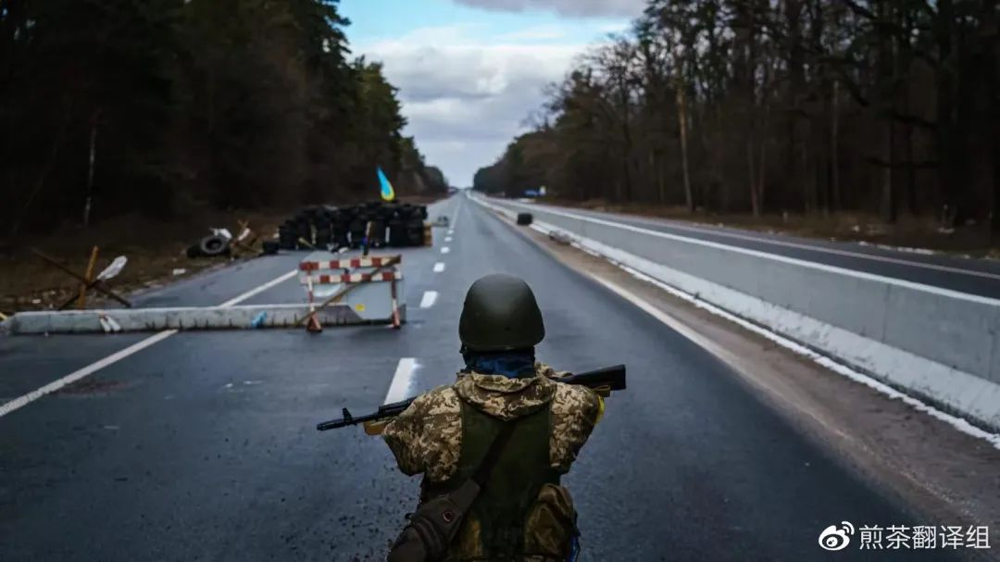
2022 年 3 月 8 日，星期二，乌克兰军队在乌克兰布罗瓦里附近与入侵的俄罗斯军队作战，士兵抵达前线加强最后一个检查站。（MARCUS YAM / LOS ANGELES TIMES via Getty Images）
虽然乌克兰女性在抗俄罗斯侵略的战斗中从未缺席，但是直到最近，乌克兰女性才在军队中获得平等地位。据《乌克兰世界》报道，2014年俄罗斯入侵时，许多女性“作为志愿者”为乌克兰而战，而“男性则被调动到前线”。国防一号在2019年的报道中说，虽然女性担任过战斗角色，但在纸面上，她们只被归类为“裁缝、厨师或其他非战斗职业”。正因如此，志愿服务的女性“经常发现自己处于法律保护之外”，据乌克兰女军人倡导组织 Invisible Battalion，该组织研究了女性在对俄战争中的角色。女性也无法获得“足够的社会保障”，或因服役而获得军事奖励。“她们对战争的参与被忽视和低估了，”Invisible Battalion的官网表示。根据《乌克兰世界报》的说法，争取平等的斗争催生了2018年的一项新法律，该法律“允许女性获得所有军衔和职位，并在兵役中享有平等的责任和权利”，除非它干扰了“关于生育和儿童保护的立法” 。” 一名曾在乌克兰武装部队担任狙击手的女性告诉《乌克兰世界报》，如果没有2018年的立法，她“将无法“在2018年至2020年期间担任自行火炮排的指挥官”。据《基督教科学箴言报》（Christian Science Monitor）报道，2019 年，当女性开始被允许进入军事学院时，这种平等权利得到了进一步推动。即便如此，问题依然存在。就在去年，乌克兰国防部决定，参加庆祝脱离苏联独立的阅兵式的女兵要穿高跟鞋，而不是靴子。据美国有线电视新闻网报道，这一决定“激怒了许多立法者”。它被批评为性别歧视，并被称为“耻辱”。一位立法者表示，“很难想象一个比这更愚蠢、更有害的想法”，而且军队中的女性“不应该被嘲笑”。在强烈反对之后，乌克兰国防部宣布，女性只需穿上“更舒适”的高跟鞋就可以参加阅兵式。如果之前还对”女性是对抗俄罗斯的战斗力量的重要组成部分“这个问题有任何挥之不去的怀疑，那么自前段时间俄罗斯军队入侵乌克兰以来，这些怀疑很快就被推翻了。士兵纳迪亚·巴奇 (Nadia Babych) 告诉《基督教科学箴言报》，“女性加入军队的理由与男性是一样的”，“我们想让乌克兰自由。” 产生影响的不仅仅是那些留下来打仗的人。CBS 新闻的克里斯蒂娜·鲁菲尼 (Christina Ruffini) 报道说，妇女在波兰和乌克兰的边境“充当信使”，帮助将平民带到安全的地方，然后转身将物资运送到乌克兰的前线。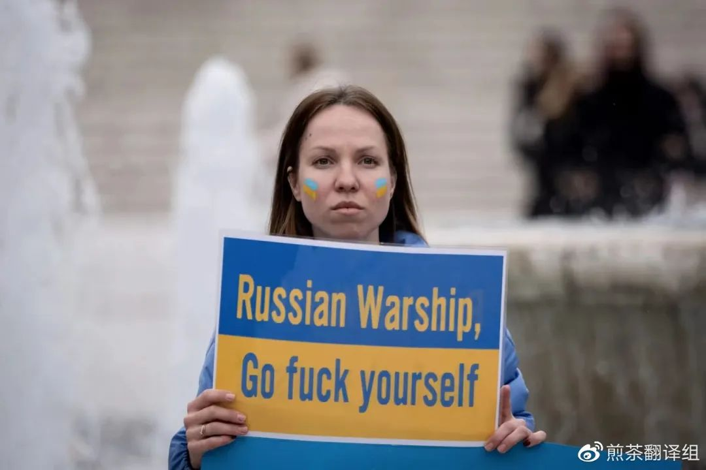
2022 年 3 月 5 日，居住在希腊的乌克兰人在希腊雅典市中心的希腊议会前抗议俄罗斯在乌克兰的军事行动。（摄影：Nikolas Kokovlis/NurPhoto via Getty Images）
“看，我没有枪，我不能开枪，我不能战斗——但这就是我能做的，所以这就是我要做志愿者的方式，”鲁菲尼引用这位女士的话说。在许多情况下，女性肩负着让自己的孩子以及其他人的孩子——出国的责任，因为处于战斗年龄的男性被禁止离开国境。CNN的克里斯蒂娜·麦克法兰提到，因为几个孩子的父亲无法离开这个国家，最后一名妇女保护孩子们越过边境进入了匈牙利，并“安全地将他们交给了他们的母亲”。鲁迪克告诉美国有线电视新闻网，女性可以决定自己如何在战争中发挥最大作用，如何在对俄罗斯作战中产生最大影响。“我在这里是可以发挥最大作用的，我可以拿起武器，我可以激励其他人也这样做，”她说。“我可以确保普京有比他最初想象的要多得多的人来战斗，因为除了乌克兰男人之外，还有站起来、举着武器的女人，在不断地涌现。” “因为我们非常强大，我们非常勇敢，”鲁迪克说。（来源：故事学院、耶路撒冷邮报、The Conversation杂志、Task & Purpose等；翻译：小庄、小晨、Karen）